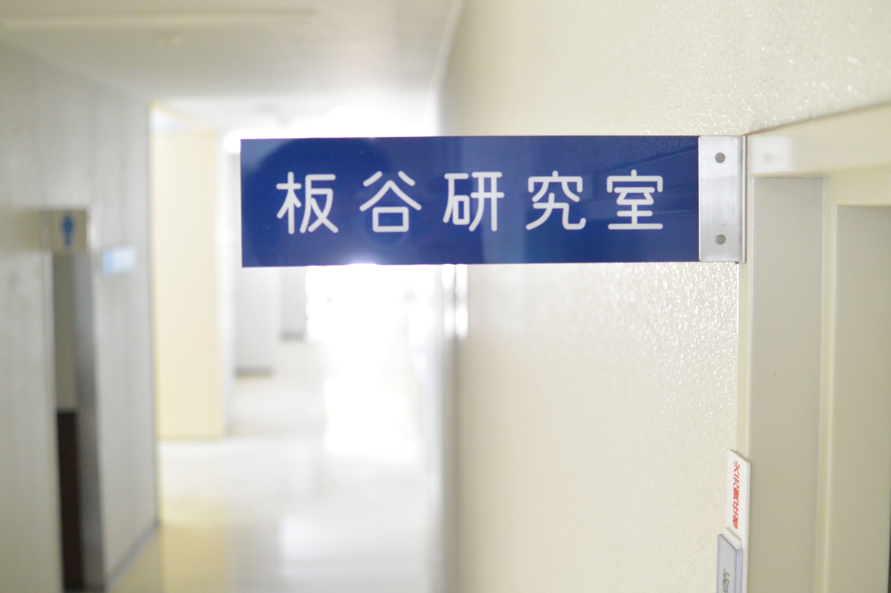

ようこそ板谷研究室へ

香川大学大学院地域マネジメント研究科の板谷和彦研究室のホームページです。
私は、技術経営やイノベーションといった分野を中心として、
画期的なアイデアの創造から社会に変化を与える一連のプロセスを幅広く対象とし、教育と研究を進めています。
所属する研究科が複数教員での指導をポリシーとしているため、板谷研という形で現在所属するメンバーはいませんが、
授業、ゼミや修了後の交流を通して多くの学生を指導するとともに、地域の企業の方々、海外の研究者とも様々な形で交流しています。